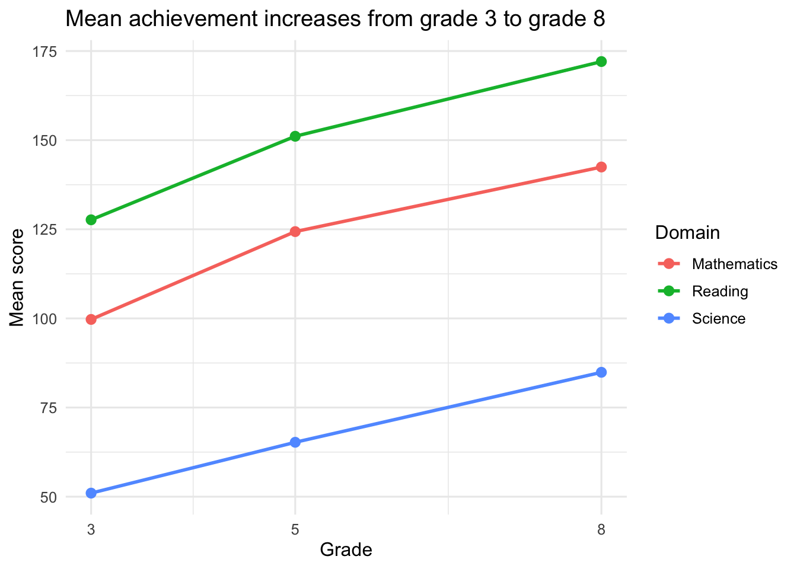
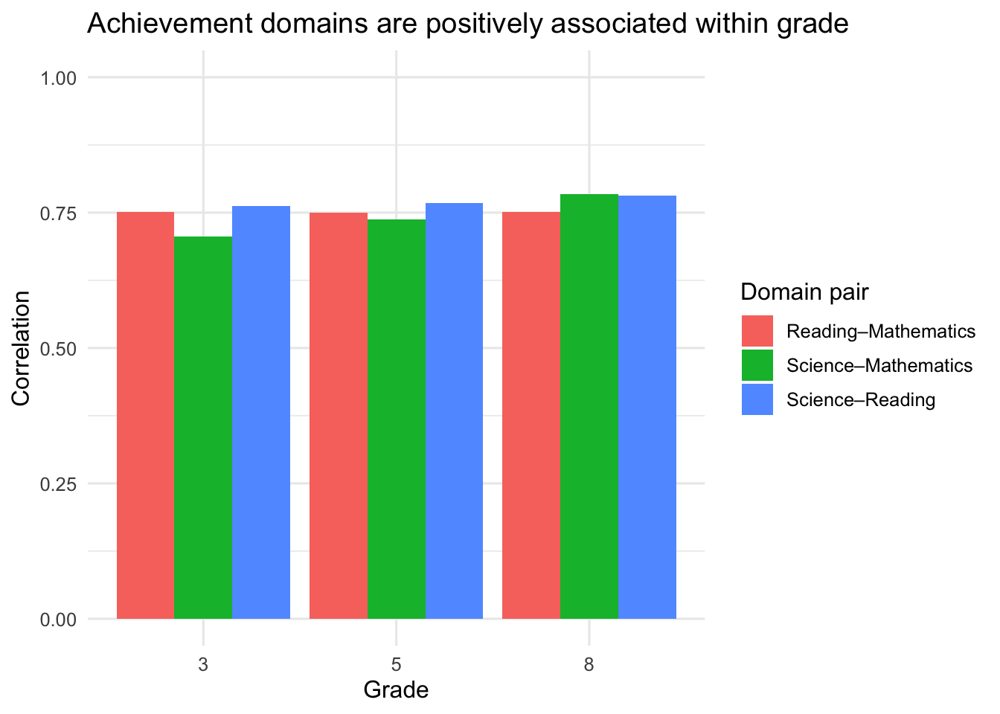

library(tidyverse)
library(janitor)
library(knitr)Initial Descriptive Analysis of ECLS-K Achievement Data
Purpose
This notebook provides an initial descriptive analysis of the ECLS-K achievement file used in the SVR-DD project. The goal is to inspect the structure of the dataset, summarize missingness, describe broad developmental patterns across grades, and examine within-grade associations among achievement domains before moving to formal developmental models.
Setup
eclsk <- read_csv(
"../../data/eclsk_data.csv",
na = c("", "NA")
) %>%
clean_names() %>%
select(-any_of(c("x", "x1")))
glimpse(eclsk)Rows: 2,108
Columns: 19
$ id <dbl> 1, 3, 8, 16, 28, 44, 46, 62, 66, 74, 94, 104, 109, 117, 137, 139…
$ s_g3 <dbl> NA, NA, NA, 51.57, NA, NA, 72.09, 34.71, NA, 62.94, NA, 70.64, 3…
$ r_g3 <dbl> NA, NA, NA, 142.18, NA, NA, 154.43, 106.40, NA, 126.06, NA, 177.…
$ m_g3 <dbl> NA, NA, NA, 115.59, NA, NA, 96.87, 87.86, NA, 92.47, NA, 126.34,…
$ s_g5 <dbl> NA, NA, NA, 65.94, NA, NA, 79.44, 47.44, NA, 73.70, NA, 73.75, 6…
$ r_g5 <dbl> NA, NA, NA, 141.02, NA, NA, 170.57, 145.72, NA, 145.17, NA, 181.…
$ m_g5 <dbl> NA, NA, NA, 133.67, NA, NA, 116.28, 104.68, NA, 124.73, NA, 139.…
$ s_g8 <dbl> NA, NA, 103.90, 86.90, NA, NA, 89.08, NA, NA, 92.67, NA, 98.70, …
$ r_g8 <dbl> NA, NA, 204.10, 169.83, NA, NA, 192.07, NA, NA, 193.43, NA, 205.…
$ m_g8 <dbl> NA, NA, 166.67, 156.67, NA, NA, 132.40, NA, NA, 133.93, NA, 161.…
$ st_g3 <dbl> NA, NA, NA, -0.241, NA, NA, 0.592, -0.966, NA, 0.171, NA, 0.532,…
$ rt_g3 <dbl> NA, NA, NA, 1.413, NA, NA, 1.639, 1.127, NA, 1.260, NA, 1.985, 1…
$ mt_g3 <dbl> NA, NA, NA, 1.601, NA, NA, 1.284, 1.124, NA, 1.222, NA, 1.810, 1…
$ st_g5 <dbl> NA, NA, NA, 0.476, NA, NA, 1.224, -0.485, NA, 0.902, NA, 0.942, …
$ rt_g5 <dbl> NA, NA, NA, 1.161, NA, NA, 1.599, 1.183, NA, 1.209, NA, 1.779, 1…
$ mt_g5 <dbl> NA, NA, NA, 1.512, NA, NA, 1.177, 1.097, NA, 1.377, NA, 1.620, 1…
$ st_g8 <dbl> NA, NA, 2.236, 0.950, NA, NA, 1.065, NA, NA, 1.274, NA, 1.700, 1…
$ rt_g8 <dbl> NA, NA, 1.987, 1.243, NA, NA, 1.586, NA, NA, 1.617, NA, 2.092, 1…
$ mt_g8 <dbl> NA, NA, 2.041, 1.704, NA, NA, 1.230, NA, NA, 1.256, NA, 1.846, 1…Data overview
The dataset contains repeated achievement measures for science, reading, and mathematics in grades 3, 5, and 8. Variables with prefixes s_, r_, and m_ are the raw achievement measures used in this notebook. Variables with prefixes st_, rt_, and mt_ are transformed versions retained in the source file but not emphasized in this initial overview.
overview <- tibble(
students = nrow(eclsk),
variables = ncol(eclsk),
grades = "3, 5, 8",
domains = "Science, Reading, Mathematics"
)
kable(overview)| students | variables | grades | domains |
|---|---|---|---|
| 2108 | 19 | 3, 5, 8 | Science, Reading, Mathematics |
raw_long <- eclsk %>%
select(id, matches("^[srm]_g[358]$")) %>%
pivot_longer(
cols = -id,
names_to = c("domain", "grade"),
names_pattern = "([srm])_g([358])",
values_to = "score"
) %>%
mutate(
domain = recode(
domain,
s = "Science",
r = "Reading",
m = "Mathematics"
),
grade = as.integer(grade)
)Missing-data summary
Because the same students are not observed at every wave, the first descriptive question is how much usable data are available for each domain and grade.
missing_summary <- raw_long %>%
group_by(domain, grade) %>%
summarize(
n_nonmissing = sum(!is.na(score)),
n_missing = sum(is.na(score)),
pct_nonmissing = mean(!is.na(score)) * 100,
.groups = "drop"
) %>%
arrange(domain, grade)
kable(
missing_summary,
digits = 1,
col.names = c("Domain", "Grade", "Non-missing n", "Missing n", "Non-missing %")
)| Domain | Grade | Non-missing n | Missing n | Non-missing % |
|---|---|---|---|---|
| Mathematics | 3 | 1442 | 666 | 68.4 |
| Mathematics | 5 | 1136 | 972 | 53.9 |
| Mathematics | 8 | 945 | 1163 | 44.8 |
| Reading | 3 | 1430 | 678 | 67.8 |
| Reading | 5 | 1133 | 975 | 53.7 |
| Reading | 8 | 941 | 1167 | 44.6 |
| Science | 3 | 1442 | 666 | 68.4 |
| Science | 5 | 1135 | 973 | 53.8 |
| Science | 8 | 947 | 1161 | 44.9 |
The number of observed scores declines across grades, which will matter for any later longitudinal analysis.
Descriptive statistics
descriptives <- raw_long %>%
group_by(domain, grade) %>%
summarize(
n = sum(!is.na(score)),
mean = mean(score, na.rm = TRUE),
sd = sd(score, na.rm = TRUE),
min = min(score, na.rm = TRUE),
max = max(score, na.rm = TRUE),
.groups = "drop"
) %>%
arrange(domain, grade)
kable(
descriptives,
digits = 2,
col.names = c("Domain", "Grade", "n", "Mean", "SD", "Min", "Max")
)| Domain | Grade | n | Mean | SD | Min | Max |
|---|---|---|---|---|---|---|
| Mathematics | 3 | 1442 | 99.72 | 25.54 | 35.72 | 159.40 |
| Mathematics | 5 | 1136 | 124.35 | 25.17 | 50.87 | 169.53 |
| Mathematics | 8 | 945 | 142.47 | 22.50 | 67.75 | 172.20 |
| Reading | 3 | 1430 | 127.66 | 29.22 | 51.46 | 195.82 |
| Reading | 5 | 1133 | 151.09 | 27.31 | 64.69 | 202.22 |
| Reading | 8 | 941 | 172.05 | 27.73 | 89.15 | 208.44 |
| Science | 3 | 1442 | 50.99 | 15.62 | 18.37 | 92.66 |
| Science | 5 | 1135 | 65.25 | 16.18 | 22.57 | 103.23 |
| Science | 8 | 947 | 84.89 | 16.71 | 29.61 | 107.90 |
Mean achievement across grades
mean_plot_data <- raw_long %>%
group_by(domain, grade) %>%
summarize(
mean_score = mean(score, na.rm = TRUE),
.groups = "drop"
)
ggplot(mean_plot_data, aes(x = grade, y = mean_score, color = domain)) +
geom_line(linewidth = 1) +
geom_point(size = 2.5) +
scale_x_continuous(breaks = c(3, 5, 8)) +
labs(
title = "Mean achievement increases from grade 3 to grade 8",
x = "Grade",
y = "Mean score",
color = "Domain"
) +
theme_minimal(base_size = 12)
All three domains show higher mean scores at later grades. This figure is descriptive only; it does not distinguish developmental growth from differences introduced by attrition or measurement features.
Within-grade associations among domains
A second useful descriptive question is whether science, reading, and mathematics scores are positively associated within each grade.
correlation_tables <- raw_long %>%
select(id, domain, grade, score) %>%
pivot_wider(names_from = domain, values_from = score) %>%
group_by(grade) %>%
group_map(~ {
cor_matrix <- .x %>%
select(Science, Reading, Mathematics) %>%
cor(use = "pairwise.complete.obs") %>%
round(2)
list(
grade = unique(.x$grade),
matrix = cor_matrix
)
})for (item in correlation_tables) {
cat("### Grade ", item$grade, "\n\n", sep = "")
print(kable(item$matrix))
cat("\n\n")
}Grade
| Science | Reading | Mathematics | |
|---|---|---|---|
| Science | 1.00 | 0.76 | 0.71 |
| Reading | 0.76 | 1.00 | 0.75 |
| Mathematics | 0.71 | 0.75 | 1.00 |
Grade
| Science | Reading | Mathematics | |
|---|---|---|---|
| Science | 1.00 | 0.77 | 0.74 |
| Reading | 0.77 | 1.00 | 0.75 |
| Mathematics | 0.74 | 0.75 | 1.00 |
Grade
| Science | Reading | Mathematics | |
|---|---|---|---|
| Science | 1.00 | 0.78 | 0.78 |
| Reading | 0.78 | 1.00 | 0.75 |
| Mathematics | 0.78 | 0.75 | 1.00 |
cor_plot_data <- raw_long %>%
select(id, domain, grade, score) %>%
pivot_wider(names_from = domain, values_from = score) %>%
group_by(grade) %>%
summarize(
science_reading = cor(Science, Reading, use = "pairwise.complete.obs"),
science_math = cor(Science, Mathematics, use = "pairwise.complete.obs"),
reading_math = cor(Reading, Mathematics, use = "pairwise.complete.obs"),
.groups = "drop"
) %>%
pivot_longer(
cols = -grade,
names_to = "pair",
values_to = "correlation"
) %>%
mutate(
pair = recode(
pair,
science_reading = "Science–Reading",
science_math = "Science–Mathematics",
reading_math = "Reading–Mathematics"
)
)
ggplot(cor_plot_data, aes(x = factor(grade), y = correlation, fill = pair)) +
geom_col(position = "dodge") +
scale_y_continuous(limits = c(0, 1)) +
labs(
title = "Achievement domains are positively associated within grade",
x = "Grade",
y = "Correlation",
fill = "Domain pair"
) +
theme_minimal(base_size = 12)
The domains are positively associated within each grade. These associations are consistent with the idea that reading-related and broader academic skills develop together, but they do not by themselves identify the mechanism producing that pattern.
Initial observations
This first descriptive pass suggests four practical points for later modeling work:
- The file contains repeated measures for three achievement domains across grades 3, 5, and 8.
- Available sample size declines across later grades, so longitudinal analyses will need an explicit missing-data strategy.
- Mean achievement scores rise across grades in all three domains.
- Science, reading, and mathematics scores are positively associated within grade.
These patterns provide useful orientation for subsequent SVR-DD analyses, but they remain descriptive. Model comparison will require explicit developmental mechanisms and tests of the patterns those mechanisms imply.
Session information
sessionInfo()R version 4.6.0 (2026-04-24)
Platform: aarch64-apple-darwin23
Running under: macOS Tahoe 26.4.1
Matrix products: default
BLAS: /Library/Frameworks/R.framework/Versions/4.6/Resources/lib/libRblas.0.dylib
LAPACK: /Library/Frameworks/R.framework/Versions/4.6/Resources/lib/libRlapack.dylib; LAPACK version 3.12.1
locale:
[1] en_US.UTF-8/en_US.UTF-8/en_US.UTF-8/C/en_US.UTF-8/en_US.UTF-8
time zone: America/Chicago
tzcode source: internal
attached base packages:
[1] stats graphics grDevices utils datasets methods base
other attached packages:
[1] knitr_1.51 janitor_2.2.1 lubridate_1.9.5 forcats_1.0.1
[5] stringr_1.6.0 dplyr_1.2.1 purrr_1.2.2 readr_2.2.0
[9] tidyr_1.3.2 tibble_3.3.1 ggplot2_4.0.3 tidyverse_2.0.0
loaded via a namespace (and not attached):
[1] bit_4.6.0 gtable_0.3.6 jsonlite_2.0.0 crayon_1.5.3
[5] compiler_4.6.0 tidyselect_1.2.1 parallel_4.6.0 snakecase_0.11.1
[9] scales_1.4.0 yaml_2.3.12 fastmap_1.2.0 R6_2.6.1
[13] labeling_0.4.3 generics_0.1.4 htmlwidgets_1.6.4 pillar_1.11.1
[17] RColorBrewer_1.1-3 tzdb_0.5.0 rlang_1.2.0 stringi_1.8.7
[21] xfun_0.57 S7_0.2.2 bit64_4.8.0 otel_0.2.0
[25] timechange_0.4.0 cli_3.6.6 withr_3.0.2 magrittr_2.0.5
[29] digest_0.6.39 grid_4.6.0 vroom_1.7.1 hms_1.1.4
[33] lifecycle_1.0.5 vctrs_0.7.3 evaluate_1.0.5 glue_1.8.1
[37] farver_2.1.2 rmarkdown_2.31 tools_4.6.0 pkgconfig_2.0.3
[41] htmltools_0.5.9